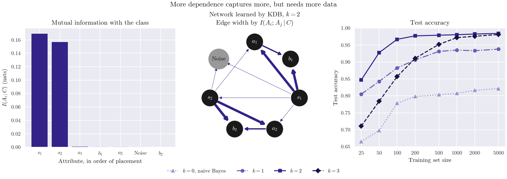

Note
Go to the end to download the full example code.
Choosing k: KDB with increasing dependence#
skbn.KDB (k-dependence Bayesian classifier) lets every attribute
depend on the class and on at most k other attributes. The attributes are
added to the network in decreasing order of their mutual information with the
class $I(A_i; C)$, and each one takes as parents the min(k, t)
attributes, among the t already in the network, with the highest
conditional mutual information
$I(A_i; A_j mid C)$.
The data have seven categorical attributes in two groups of three and a noise attribute. In each group, $a$ is uniform, $b$ is a noisy copy of $a$, and $s = a + b + y$ (with some noise). On its own, $a$ or $b$ says nothing about the class; only the three attributes of a group together determine it, up to that noise.
The sums $s$ are the attributes most informative about the class, so they
are placed first. With k=2 the last attribute of each group takes the
other two as parents and the model represents the whole group, which makes
it the most accurate. k=0 is naive Bayes, and k=1 (a tree,
comparable to skbn.TAN) only captures pairs. k=3 can also
represent the groups, but its conditional probability tables have many more
cells and need more data: it loses with small training sets and catches up
as they grow.

Order: ['s1', 's2', 'a1', 'b1', 'a2', 'noise', 'b2']
s1 <- []
s2 <- ['s1']
a1 <- ['s1', 's2']
b1 <- ['s1', 'a1']
a2 <- ['s2', 's1']
noise <- ['s1', 's2']
b2 <- ['s2', 'a2']
k=0: [0.665 0.698 0.778 0.798 0.803 0.807 0.817 0.821]
k=1: [0.805 0.843 0.883 0.906 0.931 0.935 0.933 0.938]
k=2: [0.847 0.928 0.967 0.977 0.979 0.98 0.982 0.984]
k=3: [0.711 0.784 0.857 0.911 0.952 0.972 0.976 0.981]
# Author: The scikit-bayes Developers
# SPDX-License-Identifier: BSD-3-Clause
import matplotlib.pyplot as plt
import numpy as np
from matplotlib.ticker import NullLocator, StrMethodFormatter
from sklearn.metrics import accuracy_score
from skbn import KDB
# Two groups and a noise attribute
def make_data(n_samples, rng):
y = rng.randint(0, 2, size=n_samples)
columns = []
for _ in range(2):
a = rng.randint(0, 3, size=n_samples)
b = np.where(rng.rand(n_samples) < 0.5, a, rng.randint(0, 3, size=n_samples))
s = a + b + y
s = np.where(rng.rand(n_samples) < 0.9, s, rng.randint(0, 6, size=n_samples))
columns.extend([a, b, s])
columns.append(rng.randint(0, 3, size=n_samples)) # Noise
return np.column_stack(columns), y
rng = np.random.RandomState(42)
X_train, y_train = make_data(5000, rng)
X_test, y_test = make_data(5000, rng)
names = ["a1", "b1", "s1", "a2", "b2", "s2", "noise"]
labels = ["$a_1$", "$b_1$", "$s_1$", "$a_2$", "$b_2$", "$s_2$", "Noise"]
kdb = KDB(k=2).fit(X_train, y_train)
cmi = kdb.conditional_mutual_info_
print("Order:", [names[i] for i in kdb.feature_order_])
for i in kdb.feature_order_:
print(f" {names[i]:>5} <- {[names[j] for j in kdb.parents_[i]]}")
# Accuracy as the training set grows; k: colour (lightness of the KDB
# colour), line style, marker
sizes = [25, 50, 100, 200, 500, 1000, 2000, 5000]
styles = {
0: ("#9C93D1", ":", "^"),
1: ("#6A5DB8", "-.", "o"),
2: ("#332288", "-", "s"),
3: ("#1A1144", "--", "D"),
}
accuracy = {k: [] for k in styles}
for n in sizes:
for k in styles:
model = KDB(k=k).fit(X_train[:n], y_train[:n])
accuracy[k].append(accuracy_score(y_test, model.predict(X_test)))
for k in styles:
print(f"k={k}: {np.round(accuracy[k], 3)}")
fig, axes = plt.subplots(1, 3, figsize=(13, 4.6))
n_features = X_train.shape[1]
# Group attributes in dark grey, the noise attribute in light grey
node_colors = ["#1A1A1A"] * 6 + ["#999999"]
# Mutual information with the class, in the order of placement
order = kdb.feature_order_
axes[0].bar(
range(n_features),
kdb.mutual_info_[order],
color=["#332288" if i < 6 else "#999999" for i in order],
)
axes[0].set_xticks(range(n_features), [labels[i] for i in order])
axes[0].set_xlabel("Attribute, in order of placement")
axes[0].set_ylabel("$I(A_i; C)$ (nats)")
axes[0].set_title("Mutual information with the class")
# The learned network (the class, parent of every attribute, is omitted)
angles = np.pi / 2 - 2 * np.pi * np.arange(n_features) / n_features
pos = np.column_stack([np.cos(angles), np.sin(angles)])
max_cmi = max(cmi[i, p] for i in range(n_features) for p in kdb.parents_[i])
for i in range(n_features):
for p in kdb.parents_[i]:
axes[1].annotate(
"",
xy=pos[i],
xytext=pos[p],
arrowprops=dict(
arrowstyle="-|>",
color="#332288",
lw=0.5 + 4 * cmi[i, p] / max_cmi,
shrinkA=17,
shrinkB=17,
),
)
for i in range(n_features):
axes[1].scatter(*pos[i], s=900 if i < 6 else 1400, color=node_colors[i], zorder=3)
axes[1].text(
*pos[i],
labels[i],
color="white" if i < 6 else "#1A1A1A",
ha="center",
va="center",
zorder=4,
)
axes[1].set_xlim(-1.3, 1.3)
axes[1].set_ylim(-1.3, 1.3)
axes[1].set_aspect("equal")
axes[1].axis("off")
axes[1].set_title(
"Network learned by KDB, $k = 2$\nEdge width by $I(A_i; A_j \\mid C)$"
)
for k, (color, style, marker) in styles.items():
label = f"$k = {k}$, naive Bayes" if k == 0 else f"$k = {k}$"
axes[2].plot(sizes, accuracy[k], color=color, ls=style, marker=marker, label=label)
axes[2].set_xscale("log")
axes[2].set_xticks(sizes)
axes[2].xaxis.set_major_formatter(StrMethodFormatter("{x:g}"))
axes[2].xaxis.set_minor_locator(NullLocator())
axes[2].set_xlabel("Training set size")
axes[2].set_ylabel("Test accuracy")
axes[2].set_title("Test accuracy")
fig.legend(*axes[2].get_legend_handles_labels(), loc="outside lower center", ncol=4)
fig.suptitle("More dependence captures more, but needs more data")
plt.show()
Total running time of the script: (0 minutes 0.473 seconds)